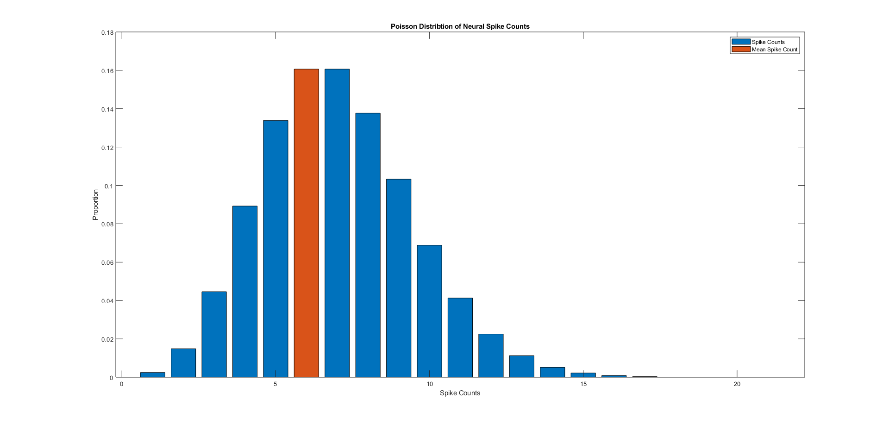
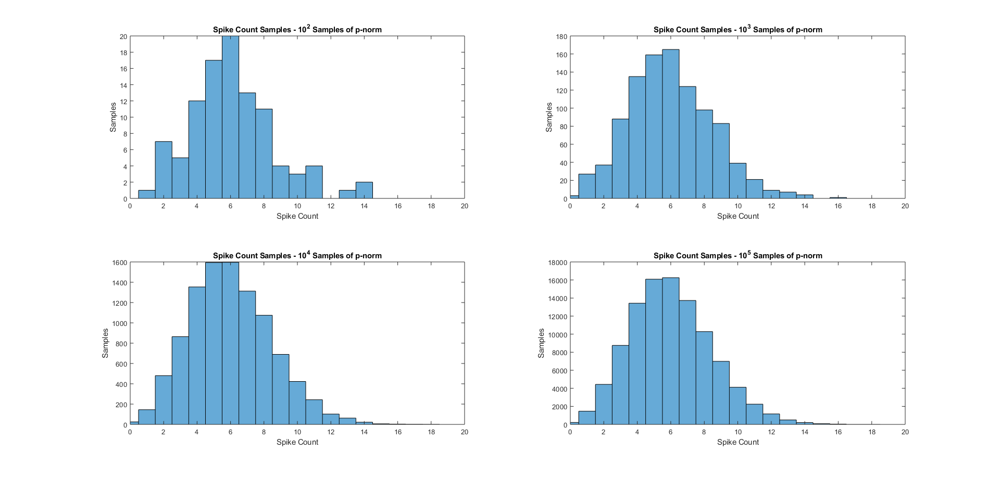
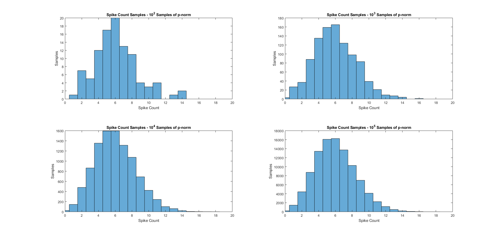
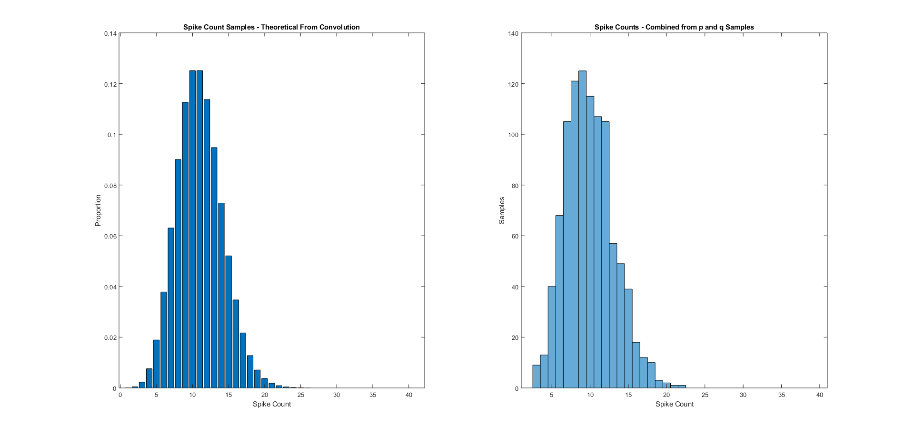
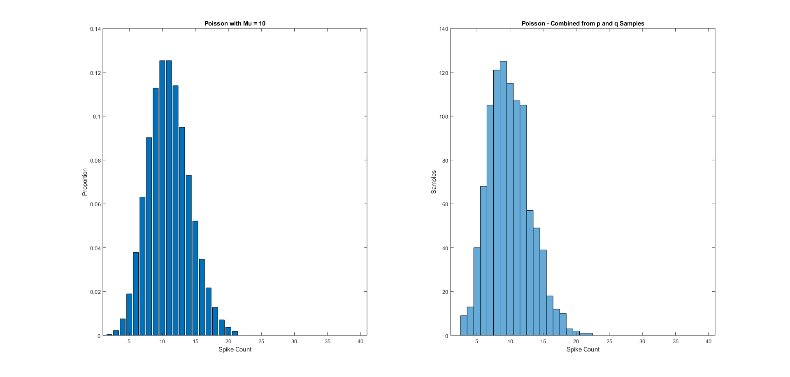

Contents
HW # 4 - Question 2 - Math Tools - Matthew DeVerna
clear all close all
Question 2: Poisson Neurons.
The Poisson distribution is commonly used to model neural spike counts:
% p(k) = meu^k * e^(-meu) / k! % k = the spike count (over some specified time interval) % meu = expected # of spikes over that interval
(A) What does the Poisson distribution look like?
% Set meu = 6 spikes/interval meu = 6; for k = 0:20 p(k+1) = ((meu^k)*exp(-meu))/(factorial(k)); end p_norm = (p/sum(p)) ; % Normalize Dist_SumsToOne = isequal(round(sum(p_norm),6),1) % Check that this = 1 k = [0:20]' ; % set an array for 0 to 20 spikes % Here we find the mean, as a check exp_val = p_norm*k % Plot the distribution and the mean figure bar(p_norm) hold on bar(exp_val, p_norm(int8(exp_val))) xlabel('Spike Counts') ylabel('Proportion') title('Poisson Distribtion of Neural Spike Counts') legend('Spike Counts','Mean Spike Count')
Dist_SumsToOne =
logical
1
exp_val =
6.0000
 (B) Samples from the Poisson distribution
Generate samples from the Poisson distribution where each sample represents the number of spike count ranging from 0 to 20. To simplify the problem, use a clipped Poisson vector 'p' to write a function: samples = randp(p,num) that generates 'num' samples from the probability distribution function (PDF) specified by 'p'.
% [Hint: use rand function, which generates real values over the interval % [0 ... 1], and partition this interval into portions proportional in size % to the probabilitiees in p] % Test your function by drawing 1,000 samples from the Poisson distribution % in (A), plotting a historgram of how many times each value is sampled, % and comparing this to the frequencies predicted by 'p'. num = 1000 ; samples = randp(p_norm,num) ; % Plot these samples as a binned distribution vs. the actual pdf figure; hold on; subplot(1,2,1) histogram(samples); title('Spike Count Samples - 1000 Samples of p-norm') xlabel('Spike Count') ylabel('Samples') subplot(1,2,2) bar(p_norm) title('Spike Count PDF - p-norm') xlabel('Spike Count') ylabel('Proportion') % Verify qualitatively that the answer gets closer (converges) as you % increase the number of samples (try 10 raised to powers [2,3,4,5]). powers = [2,3,4,5]; figure; hold on; for pp = 1:length(powers) num = 10^powers(pp) ; samples = randp(p_norm,num) ; subplot(2,2,pp) histogram(samples) ; xlim([0,k(end)]) ; title(['Spike Count Samples - 10^' + ... string(powers(pp)) + ' Samples of p-norm']) ; xlabel('Spike Count') ylabel('Samples') end QualitativeCheck = {'If you look at the plots as the exponent increases, you can' 'see that the distribution better approximates that of the' 'original p_norm distribution.'}
QualitativeCheck =
3×1 cell array
{'If you look at the plots as the exponent increases, you can'}
{'see that the distribution better approximates that of the' }
{'original p_norm distribution.' }
 
 (C) Recording Two Neurons Simultaneously
Imagine you're recording with an electrode from two neurons simultaneous, whose spikes have very similar waveforms (and thus can't be distinguished by the spike sorting software). Create a probability vector 'q' for the second neuron, assuming a mean rate of 4 spikes/interval.
rate = 4; for k = 0:20 q(k+1) = ((rate^k)*exp(-rate))/(factorial(k)) ; end q_norm = (q/sum(q)) ; % Normalize Dist_SumsToOne = isequal(round(sum(q_norm),6),1) % Check that this = 1 k = [0:20]' ; % set an array for 0 to 20 spikes % Here we find the mean, as a check exp_val = q_norm*k Mean_EqualsRate = isequal(round(exp_val,6),rate) % Check that this = 1 % Now we create a new theoretical distribution which we can find by taking % the convolution of the two distributions. theoretical_pdf_of_2_neurons = conv(p_norm, q_norm) ; % [Hint: the output vector should have length m + n - 1 when m and n are % the lengths of the two input PDFs. This is because the maximum spike % count will be bigger than the maximum of each respective individual % neuron.] % Check Length based on hint Length_Check = isequal(length(p_norm) + length(q_norm) - 1, length(theoretical_pdf_of_2_neurons)) % We verify the answer by comparing it to the histogram of 1,000 samples % generated by summing two calls to 'randp()' num = 1000 ; % Set # of samples to draw from each samples_neuron1 = randp(p_norm,num) ; % Take 1000 samples samples_neuron2 = randp(q_norm,num) ; % Take 1000 samples combined_sample = samples_neuron1 + samples_neuron2 ; % Take 1000 samples % Plot the theoretical distribution... figure; hold on; subplot(1,2,1) bar(theoretical_pdf_of_2_neurons) title('Spike Count Samples - Theoretical From Convolution') xlabel('Spike Count') ylabel('Proportion') % ... next to the combined sample subplot(1,2,2) histogram(combined_sample) title('Spike Counts - Combined from p and q Samples') xlabel('Spike Count') ylabel('Samples') xlim([1,length(theoretical_pdf_of_2_neurons)]) QualitativeCheck = {'If you look at the two plots you can see that they are quite similar' 'to one another. They wont be exactly alike because one is a theoretical' 'distribution, while the other is an empircal sample.'}
Dist_SumsToOne =
logical
1
exp_val =
4.0000
Mean_EqualsRate =
logical
1
Length_Check =
logical
1
QualitativeCheck =
3×1 cell array
{'If you look at the two plots you can see that they are quite similar' }
{'to one another. They wont be exactly alike because one is a theoretical'}
{'distribution, while the other is an empircal sample.' }
 (D) Neuron w/ Mean Rate of 10 spikes/interval
Now imagine you are recording from a neuron with mean rate of 10 spikes/interval (the sum of the rates from the neurons above).
rate = 10; for k = 0:20 ten_spikes(k+1) = ((rate^k)*exp(-rate))/(factorial(k)) ; end ten_spikes_norm = (ten_spikes/sum(ten_spikes)) ; % Normalize Dist_SumsToOne = isequal(round(sum(ten_spikes_norm),6),1) % Check that this = 1 k = [0:20]' ; % set an array for 0 to 20 spikes % Here we find the mean, as a check exp_val = ten_spikes_norm*k Mean_EqualsRate = isequal(round(exp_val,6),rate) % Check that this = 1 % Plot the distribution of spike counts for this neuron, in comparison with % the distribution of the sum of the previous two neurons. figure; hold on ; subplot(1,2,1) bar(ten_spikes_norm) title('Poisson with Mu = 10') xlabel('Spike Count') ylabel('Proportion') xlim([1,length(theoretical_pdf_of_2_neurons)]) subplot(1,2,2) histogram(combined_sample) title('Poisson - Combined from p and q Samples') xlabel('Spike Count') ylabel('Samples') xlim([1,length(theoretical_pdf_of_2_neurons)]) % Based on the results of these two experiments, if we record a new spike % train, can you tell whether the spikes you have recorded came from one or % two neurons just by looking at their distribution of spike counts? TwoVsOneNeuron = {'Based on this exercise it doesn''t appear that we would be able to uncover' 'whether or not the spikes came from one or two neurons because of how they' 'linearly combine. I could be wrong about this but it seems like' 'conducting some sort of PCA analysis might be a good next step?'} % Comment about the reason why based on the intuition behind the Poisson % distribution. IntuitionBehindNewPoisson = {'We can see that these two distributions look the same. This makes sense' 'because combining the two distributions (via a convolution) is linear, and the new mean spike' 'count rate should become ten. This new mean rate feeds into the only' 'part of the Poisson function which varies, so these distributions become' 'identical (although one is a proportion, and the other represents' 'distribution after 1000 empirical samples.'}
Dist_SumsToOne =
logical
1
exp_val =
9.9813
Mean_EqualsRate =
logical
0
TwoVsOneNeuron =
4×1 cell array
{'Based on this exercise it doesn't appear that we would be able to uncover' }
{'whether or not the spikes came from one or two neurons because of how they'}
{'linearly combine. I could be wrong about this but it seems like' }
{'conducting some sort of PCA analysis might be a good next step?' }
IntuitionBehindNewPoisson =
6×1 cell array
{'We can see that these two distributions look the same. This makes sense' }
{'because combining the two distributions (via a convolution) is linear, and the new mean spike'}
{'count rate should become ten. This new mean rate feeds into the only' }
{'part of the Poisson function which varies, so these distributions become' }
{'identical (although one is a proportion, and the other represents' }
{'distribution after 1000 empirical samples.' }
